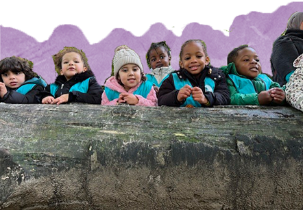
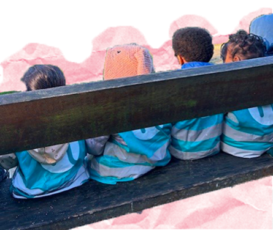

<!DOCTYPE html>
<html lang="en"></html>
<head>
	<link href="css/reset.css" rel="stylesheet" />
	<meta name="viewport" content="width=device-width, initial-scale=1.0" />
	<title>Basisschool Nieuwland</title>
	<link href="css/style.css" rel="stylesheet" />
	<link href="css/visie.css" rel="stylesheet" />
	<link rel="stylesheet" href="https://cdnjs.cloudflare.com/ajax/libs/font-awesome/4.7.0/css/font-awesome.min.css">
	<script type="module" src="./js/visie.js" defer></script>
</head>
<body class="start-body">
	<!-- <canvas id="canvas"> </canvas> -->

	<header>
		<p style="background-image: url('images/ripped-paper-top_home.png');"></p>
		<div class="wrapper">
			<div class="nav-top">
				<a href="index.html">
					
				</a>
			</div>
			<!-- https://www.w3schools.com/howto/howto_css_dropdown.asp -->
			<div class="navigation">
					<div class="dropdown_1">
					<button class="dropbtn_1">Onze Visies</button>
					<div class="dropdown-content_1">
						<a href="visie.html">Visie</a>
						<a href="brede_school.html">Brede School</a>
					</div>
				</div>

				<div class="dropdown_2">
					<button class="dropbtn_2">Algemene Informatie</button>
					<div class="dropdown-content_2">
						<a href="praktische_informatie.html">Praktische Informatie</a>
						<a href="inschrijven.html">Inschrijven</a>
                        <a href="klassen.html">Klassen</a>
					</div>
				</div>
				<a href="nieuws.html" class="Nieuws">Nieuws</a>
				<a href="contact.html" class="Contact">Contact</a>
			</div>

		</div>

		<div class="title">
			<h1>Visie</h1>
		</div>

	<div id="filter">
		<button class="button-1">Pedagogisch Project</button>
		<button class="button-2">Oriëntatie op de wereld</button>
		<button class="button-3">Zin in leren! Zin in leven!</button>
	</div>

	<div id="content">
                
        		<div class="container">

		<div class="lerlev-1">
			
			<div class="l-title-1">
				<h2>Samen</h2>
			</div>
			<div class="l-vakje-1">
				<p>Als school willen we groeien als gemeenschap en organisatie. We </br>vertrouwen in de kracht van een team om tot die groei te komen. </br>Samen het leerplanconcept vorm geven in de klas in co – teaching, </br>samen reflecteren over onze ZILL aanpak in team – teaching zijn de</br>concrete vertalingen vandit geloof in groei.  </p>
				<p>Elke personeelslid op Sint – Joris Nieuwland treedt op als </br>verbindende figuur tussen de leerlingen, de school en de </br>thuiscontext.  Het ongedwongen en spontaan zijn binnen ontmoeten als ervaringskans is voor onze school van groot belang. </br>Daarbij dagen we de leerlingen uit om via het ‘IK’ naar ‘JIJ’ tot het</br> sociale ‘WIJ’ te komen, waarbij het WIJ staat voor onze school als</br> gemeenschap, als familie waarin iedereen welkom is.</p>
			</div>
		</div>

		<div class="lerlev-2">
			<div class="l-title-2">
				<h2>Creatief</h2>
			</div>
			<div class="l-vakje-2">
				<p>Onze leerlingen worden gekenmerkt door een kleurrijk palet aan </br>interesses, voorkeuren en talenten. Door ze via ZILL onder te </br>dompelen in betekenisvolle contexten verruimen we hun blik op de </br>wereld en begeleiden we ze op hun tocht naar nieuwe ontdekkingen. De brede vorming die we kinderen</br> daarbij aanbieden krijgt een verlengstuk in onze Brede School, </br>door activiteiten rond cultuur, welzijn en sport.  </p>
				<p>Daarnaast willen we als school creatief met het leerplanconcept</br> omspringen. Onze context en onze leerlingen dwingen ons om inhoudelijke focussen te leggen die voor onze school</br> van belang zijn. Door op systematische basis kritisch te kijken</br> naar onze onderwijskwaliteit, willen we komen tot een duurzame onderwijsverbetering.</p>
			</div>
		</div>

		<div class="lerlev-3">
			<div class="l-title-3">
				<h2>Positief</h2>
			</div>
			
			<div class="l-vakje-3">
				<p>We geloven oprecht in de leer – kracht van elke leerling op</br> Nieuwland. Dit uit zich in de ontmoeting met inspirerende </br>persoonlijkheden die voor elke betrokkene een voorbeeld kunnen zijn. Nadrukkelijk inzetten op veerkracht is voor ons</br> een voorwaarde om de leer – kracht te stimuleren. Als school zijn wij</br> ervan doordrongen dat we een cruciale bijdrage kunnen leveren in </br>de ontwikkeling van onze leerlingen door via veerkracht naar leer – kracht te streven.</p>
			</div>
		</div>

		<div class="lerlev-4">
			<div class="l-title-4">
				<h2>De lat van elk kind hoog</h2>
			</div>
			
			<div class="l-vakje-4">
				<p>Om het geloof in de leer – kracht van onze leerlingen vorm te </br>geven, stellen we realistische én ambitieuze verwachtingen ten </br>opzichte van de ontwikkeling van onze leerlingen. Door niet enkel te </br>focussen op school – en klasniveau, maar ook op leerlingniveau, willen we gelijke onderwijskansen creëren voor elke leerling. </br>Het unieke profiel van elke leerling vormt het uitgangspunt voor </br>onze aanpak binnen ZILL, waarbij het verschillend ontwikkelingstempo van elke leerling gerespecteerd wordt.</br> Ontwikkelingstrajecten op maat worden gecommuniceerd naar alle betrokkenen, zodat de verticale en</br> horizontale samenhang bewaakt wordt.</p>
			</div>
		</div>

		<div class="lerlev-5">
			
			<div class="l-title-5">
				<h2>Open</h2>
			</div>
			<div class="l-vakje-5">
				<p>Vanuit onze christelijke inspiratie willen we samen werken aan een</br> stimulerend en open opvoedingsklimaat, door iedereen uit te nodigen om aan ons onderwijsproject mee te werken.</br> Andere levensbeschouwingen of religies verwelkomen we in</br> dialoog met elkaar. Binnen ZILL willen we hier niet enkel aan werken </br>binnen het ontwikkelveld Rooms – Katholieke Godsdienst, maar streven we naar een geïntegreerd onderwijsinhoudelijk aanbod </br>waarbij leren leren, leren werken en leren leven hand in hand gaan.</p>
			</div>
		</div>

		<div class="lerlev-6">
			
			<div class="l-title-6">
				<h2>Veilig</h2>
			</div>
			<div class="l-vakje-6">
				<p>De leerkracht is de veilige baken binnen het leerplanconcept ZILL.</br> Hij staat aan het roer en bepaalt de koers, maar verleent ook mede</br> eigenaarschap aan de leerlingen door samen arrangementen uit te </br>werken. Op die manier wisselt elke leraar doorheen de</br>  arrangementen van rol: van kapitein naarmede – onderzoeker, van faciliteren tot meespelen.</p>
				<p>Daarbij zorgt de leerkracht voor een veilig leef – en leerklimaat,</br> waarbinnen fouten maken toegestaan is en noodzakelijk is om tot </br>leren te komen. We investeren in een gedifferentieerd zelfbeeld (IK),</br> relaties tussen alle betrokkenen die gebaseerd zijn op vertrouwen, respect en zorg (JIJ) en het samenhorigheidsgevoel binnen</br> Nieuwland als gemeenschap, waarin onze diversiteit als rijkdom wordt aanzien.</p>
			</div>
		</div>
	</div>


	<!-- hier moet call to action voor inschrijven -->
	

	<div class="footer">
		<div class="wrapper">
			<div ></div>

			<div class="icon-line-1"><p >0498596556</p></div>

			<div class="icon-line-1"><p >directie@bsnieuwland.be</p></div>

            <div class="icon-line-1">
                <a href="https://www.facebook.com/bsnieuwland/" target="_blank">
                
                </a>
                <p>Basisschool Nieuwland</p>
            </div>
            <div class="links-footer">

				<div class="item_row_1">
					<a href="visie.html" class="visie-footer">Visie</a>
					<a href="brede_school.html" class="bredeschool-footer">Brede School</a>
					<a href="klassen.html" class="klassen-footer">Klassen</a>
			    	<a href="inschrijven.html" class="inschrijven-footer">Inschrijven</a>
				</div>

			    <div class="item_row_2">
					<a href="contact.html" class="contact-footer">Contact</a>
			    	<a href="nieuws.html" class="nieuws-footer">Nieuws</a>
					<a href="praktische_informatie.html" class="praktischeinformatie-footer">Praktische Informatie</a>
				</div>				
            </div>

			<div class="icon-line-2"><p>Nieuwland 194, 1000 Brussel</p></div>
			
		</div>
	</div>

	<!-- <script src="js/index.js"></script> -->
</body>
</html>